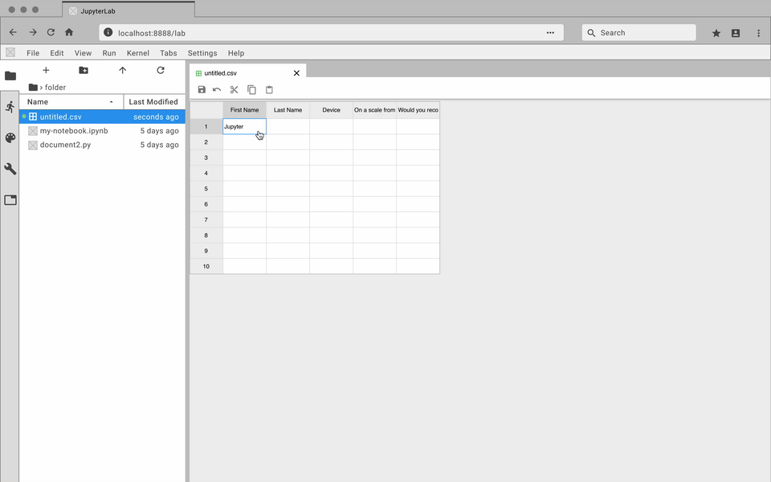
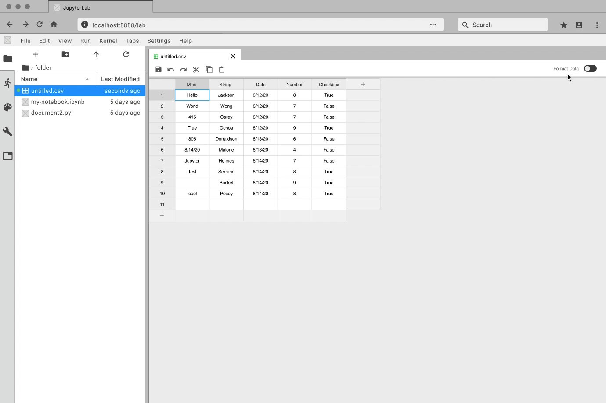

JupyterLab
Tabular Data Editor

Overview
Project Description: The JupyterLab Tabular Data Editor is a
JupyterLab extension that enables you to edit your data files
side-by-side with Jupyter notebooks. I collaborated with two
developers on creating this extension during my internship at Project
Jupyter.
Role: UX/UI Designer, Front-end Developer, UX Researcher
Tools: Figma, GitHub, Heuristic Evaluations, Personas, User
Journeys, User Stories, Miro, HTML/ CSS
Time Duration: 10 weeks
What is JupterLab?
JupyterLab is a web-based development environment where people can
code and analyze data. It is an open-source software, developed on
GitHub, through the consensus of the Jupyter community. It’s a tool
used to support a wide range of workflows in data science, scientific
computing, and machine learning.
Understanding the Problem
Editing data files within JupyterLab is inefficient and slow
Data is an integral part of many JupyterLab workflows, but a native
data editing tool is non-existent. Up until our extension, data files
(e.g. CSV, TSV, or EXCEL) were read-only in JupyterLab. That meant
every time you wanted to edit your data, you either had to directly
change code within the file or you wasted time alternating between a
spreadsheet editing software and JupyterLab.

This is just a 20 row by 8 column table. Imagine how bad it would be
with a larger set of data.
Developing a Solution
The JupyterLab Tabular Data Editor makes data files accessible and
editable
Our extension streamlines the editing process with a refined suite of
commands that help users prepare data for further work in machine
learning, scientific computing, or other data-driven tasks. You can create and edit CSV files from scratch, navigate through millions of cells smoothly, and manage your data side-by-side with Jupyter Notebooks.
Official Release
The official release of the extension was August
28th, 2020. Since then, it has received over 1,300 downloads.
How was it made?
The Design Process
Project Assignment
“Create a JupyterLab extension for editing in JupyterLab’s datagrid”
Understanding our Users
The foundation of our project begins with understanding the people were developing the extension for. I created personas, journey maps, user stories, and user flows to help the team visualize and understand our future users.


Through this research phase, we discovered several pain points when using JupyterLab to clean and edit data files. These pain points were then translated into opportunities to improve the users workflow.
1. Data files are made editable within JupyterLab
2. Several tools are accessible to organize data
3. Data files are connected through the cloud
4. Code can be used to clean the data and create outputs
2. Several tools are accessible to organize data
3. Data files are connected through the cloud
4. Code can be used to clean the data and create outputs
Opportunities into Key Features
My team and I then brainstormed features to address each opportunity. Through discussion, we created a list that prioritized each feature based on user value and feasibility. The feature list gave structure to the project. It helped ensure that we were working on things that would help the user achieve an efficient data editing process.
Wireframing and Prototyping
While the developers worked on setting up GitHub and the JupyterLab extension, I started to wireframe and prototype the key features. I used Figma and the Project Jupyter design system to create my designs.
1 / 10
Edit a cell
2 / 10

Insert and delete rows and columns
3 / 10
Move and rearrange data
4 / 10
Filter and sort data
5 / 10
Search and replace
6 / 10
Freeze rows and columns
7 / 10
Updated context menu: Multi insert and remove
8 / 10

Copy and paste content
9 / 10
Add rows and columns
10 / 10

Format Data Toggle
Designing for Both Light and Dark Theme

Communicating through GitHub
As a designer, I want to effectively communicate with my developers. GitHub is an amazing tool in presenting my designs to them. I created issues on our GitHub repository and uploaded prototypes, mockups, and design details. Not only was this method effective in communicating design specs, but it also consolidated all of the information into one place where the developers can quickly access it.

Design Reviews
Throughout the 10 weeks, I presented my designs to core Jupyter members. These reviews helped my team and I discover ideas to further improve our users' experience. Each review fostered a process of continuous improvements and iterations.
Front-end Development
I worked on the front-end for the data table, toolbar interface, and context menus. I also take great pride in making color styling changes so that it’s WCAG AAA approved!
Usability Testing
After 8 weeks of design and development, we began usability testing! I led and executed all the moderated usability tests for our team. Each test was conducted through zoom, and our participants were able to access our extension through a binder link. I then translated the findings into actionables for the developers. The tests helped us find bugs and unexpected interactions. We learned about the many mini interactions people perform when using a data table editor, and it helped us create a more informed and polished experience.
Reflection
From writing a press release to presenting the final product, I’ve gained a lot of experience designing and developing a project end-to-end. The Project Jupyter internship introduced me to the world of open-source software, and I look forward to further contributing to the community. The internship was supposed to be in-person, but that changed due to the pandemic. Although it would have been fun to work side-by-side with each other, we adapted to our situation and collaborated remotely. Overall, I’m thankful for the opportunity to design with the guidance and mentorship of the core JupyterLab team.
Thank you for reading!